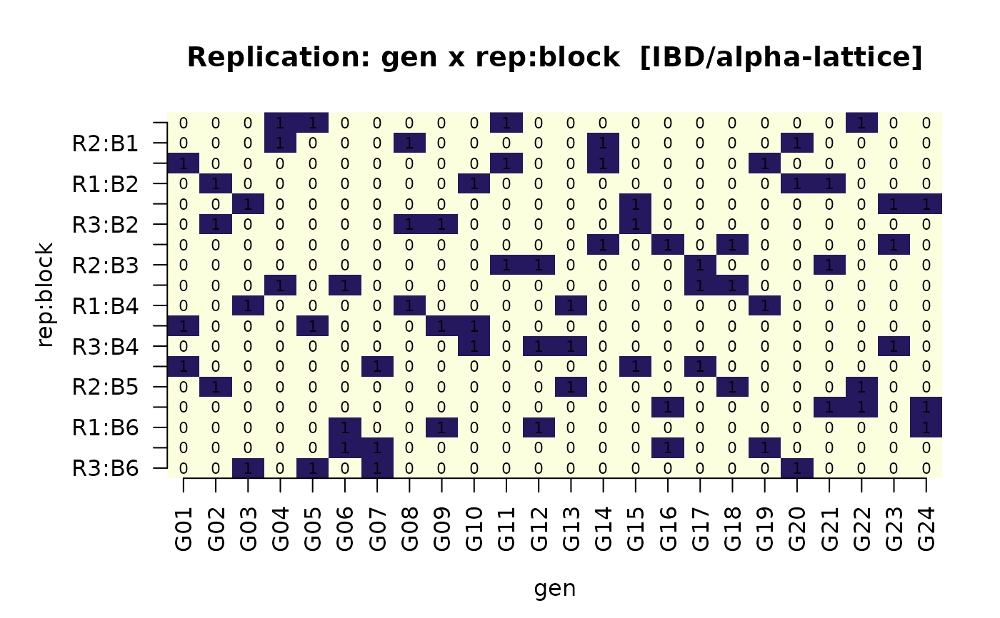

Plots the structure that drove the detect_design() verdict. The
panel layout depends on the detected class:
Usage
plot_design_summary(x, df, engine = c("base", "ggplot2"), ...)Arguments
- x
A
design_summaryobject fromdetect_design().- df
The data frame that was passed to
detect_design()— used to draw replication tiles, spatial layouts, and the NA-pattern. Required for every class except"none"with no factors.- engine
"base"(default) or"ggplot2". The latter requires ggplot2; falls back to"base"with a warning if unavailable.- ...
Ignored.
Details
CRD,factorial,none-> frequency-of-treatment + NA-pattern.RCBD,IBD/alpha-lattice-> treatment x block replication tile.row-column-> spatial layout tile (row x col, fill = treatment).split-plot-> factor-nesting tree + within-block replication.
Output is purely diagnostic; do not use it as a publication figure
(use desplot::desplot() or ggplot2-based packages for that).
Examples
if (requireNamespace("agridat", quietly = TRUE)) {
d <- agridat::john.alpha
ds <- detect_design(d)
plot(ds, df = d)
}
